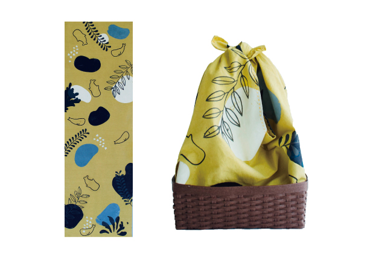

海外で支持を得ている仮想のフードデリバリーサービスhuvの初回サービス利用者の増加を目指すTwitter用カルーセル広告。 提出した課題が評価され優秀賞をいただきました。
◴ 2021/8/22-2021/8/26
✎ Illustrator

檜
森林を想像させる深い緑色に檜の特徴的な丸い年輪の形とお風呂の水面を連想させる円形の模様のデザインです。薄茶色のカゴとの組み合わせで見た目から森林を感じさせます。
竜涎香
上質な竜涎香の色味である琥珀色を背景に海を泳ぐマッコウクジラと竜涎香の歪な形の模様のデザインです。竜涎香はマッコウクジラの腸内でできる塊状の香料です。

金木犀
幾何学的な形の花を前面に出した模様のデザインです。カゴとの組み合わせで金木犀の鮮やかなオレンジ色の花と緑力しい葉を表現しています。


制作では布の染めとシルクスクリーン、カゴの制作、裁縫を行いました。特に頑張ったのは染めです。 深い色味を出すことにこだわりましたが、布が乾いてから色味が薄まってしまうため何度も染め直しを繰り返しました。 和のデザインの深みを出すことを追求した結果本来2〜3枚を単色で染めるのに2〜30分ほどで染終わるところ、この作品の染めには10時間ほどかかりました。